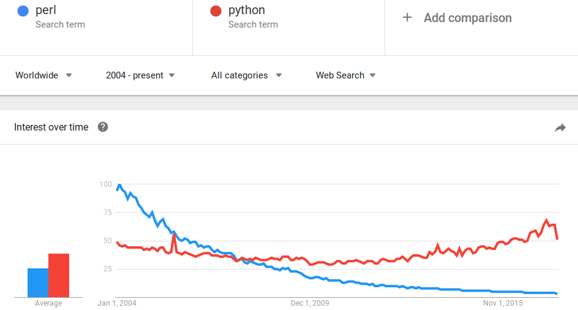

Pareto Perl
Table of Contents
It's 2 am and your pager goes off. The database for your e-commerce website is down, and you have 5 minutes to reconstruct the last hour's worth of orders given only the logs from your web server. Quick! First answer that pops into your head: what tools do you use?
A lot of people I've worked with fall back to a combination of grep and awk, which is fine but usually only gets you so far. Some reach for Python or Ruby, neither of which is a bad choice. Several, I'm sorry to report, use Java, which is a disgusting choice.
The ability to quickly extract information from text files is an undervalued skill. Fluency in a scripting language represents a huge point of leverage, and I'm here to convince you that Perl makes for a great crowbar.
So why don't more people use Perl? Probably because they're all using Python instead.
I'm not here to convince you to renounce Python in favor of Perl. In fact, for most non-trivial scripts I'd argue that Python is likely the more sensible choice.
But there is a niche in which Perl fits perfectly: somewhere between grep and a full-blown script. In this exploratory stage you don't need pretty - you just want something quick. This is where Perl's inline scripting capabilities distinguish it from other scripting languages.
To process a text file in Python you'd need to split a tmux pane, open
a new file, save it in some scratch directory, chmod +x it, add a
shebang, import the regex library, and write some tedious
with-open-while-read boilerplate just to get each line of the
input. Then and only then are you ready to write code that actually
processes text.
In Perl, the entire setup process is condensed to 12 characters, input
directly in your shell: perl -lne ''.
Warning: Perl is a big language. In fact, one of its core tenets is that for any task There's More Than One Way To Do It. Flexibility is great, but not particularly helpful when all you need is a one-liner that accomplishes a specific task.
In this post we'll focus on the tiny subset of Perl that I, a total Perl novice, find useful in my day-to-day work. If you're looking for a comprehensive introduction to Perl written by an expert, this is not the blog post for you.
Enough talk. Let's concoct a real-world scenario and see Perl in action. (Note: you can edit and run any code block on this page.)
1 Hands-on with Perl
We're oncall for an on-demand cookie delivery startup. Due to a bad deployment, we've failed to persist thousands of orders. Luckily we logged each request, so we should be able to reconstruct the orders. Let's ssh into one of the servers and see what we're working with.
[INFO] Received order for 2 'Snickerdoodle' from customer 'billbob@hotmail.com' [INFO] Received order for 5 'Chocolate Chip' from customer 'guineapiggurl@aol.com' [INFO] Restarting server on port 8000... [INFO] Received order for 1 'Double Chocolate' from customer 'billbob@hotmail.com' [INFO] Received order for 1 'Chocolate Macadamia' from customer 'guitarstar43@hotmail.com' [INFO] Received order for 3 'Oatmeal Raisin' from customer 'luv2laugh@yahoo.com' [INFO] Releasing 5 connections back to the connection pool [INFO] Received order for 1 'Snickerdoodle' from customer 'luv2laugh@yahoo.com' [INFO] Received order for 2 'Chocolate Chip' from customer 'billbob@hotmail.com' [INFO] Database connection lease expired, releasing connection [INFO] Received order for 3 'Peanut Butter' from customer 'billbob@hotmail.com' [INFO] Received order for 7 'Oatmeal Raisin' from customer 'taco_fiend@gmail.com'
Let's start by extracting the orders in a form that we can work with. (Hint: Click "Run")
perl -lne "/order for (\d+) '(.*)' from customer '(.*)'/ && print \"\$1\t\$2\t\$3\"" logs.txt
What did we just do? First, let's break down the flags. The interpreter has an overwhelming number of switches, but I use this exact combination 95% of the time (and when I don't, I have to consult Google).
| Flag | Meaning |
|---|---|
| -n | Declares an implicit while loop around your code that iterates over each record. |
| -l | Automatically appends the output record separator when calling the print function. When used in conjunction with -n, it also automatically "chomps" off the input record separator. In practice, this means you don't have to deal with stripping the newline character from each input record or adding a newline to each string before printing. |
| -e | Evaluate the following string as a Perl program. |
The relative ordering of -l and -n doesn't matter, but -e needs
to directly precede the text of our program.
So this invocation translates to, "Run the following script against every line of the input file, and don't make me think about newlines."
As for the code, we're just applying a regex and conditionally
printing the first two captured groups, which are stored in $1 and
$2 respectively. Note that I had to escape the variable names to
prevent the shell from trying to evaluate $1 and $2 as environment
variables before passing the string to the Perl interpreter.
Let's answer a simple question for our head baker: how many of each variety of cookie does she need to make?
We need to group by cookie variety and sum up the counts. Most Perl scripts I write conform to this general pattern: use a regex to extract records from a text file, then aggregate over some arbitrary grouping. The recipe in such situations typically calls for a hash (think "hashtable") that maps a string id to either a number (if we're only interested in accumulating the count) or another hash or array (if we need a more complex involving the actual values).
1.1 Recipe 1: Extract and Aggregate with a Hash
In this case, the stream is our server logs, each record consists of a cookie variety, quantity, and customer email address, and we're aggregating the number of orders per cookie variety.
Let's start simple and iterate. We'll create a hash where each key is a cookie variety and the value is the number of cookies of this variety.
perl -nle "/order for (\d+) '(.*)' from customer '(.*)'/ && do { \$x{\$2} += \$1; }; "\ "END { foreach \$k (keys %x) { print \$k, \"\t\", \$x{\$k} } }" logs.txt
The regex is the same as before. && does short-circuit boolean
evaluation just like in Java or C, so the effect is to increment a
per-customer counter on each match.
Notice that we never declare our hash variable, x, nor do we
explicitly initialize its values to 0. This works because Perl
automagically initializes and assigns a hash to x the first time it
is used (search perldoc perlref for 'autovivification' for further
reading). Then when we try to perform addition on an undefined scalar,
Perl helpfully treats that value as 0.
Perl's autovivification and context-sensitive coercion of variables
initially struck me as bizarre. The perldocs are full of WTF-inducing
gems like this one, from perldoc data.
To find out whether a given string is a valid non-zero number, it's sometimes enough to test it against both numeric 0 and also lexical "0"
Sometimes, but hey, maybe not! You never know.
Taken in the abstract, this design choice sounds arbitrary and convoluted. But it's a perfect example of the pragmatism that makes Perl so convenient.
Compare our one-liner in Perl to the equivalent Python:
import re import sys order_re = re.compile(".*order for (\d+) '(.+)' from customer '(.+)'") orders = {} with open(sys.argv[1], 'r') as f: for line in f: m = order_re.match(line) if m: (quant, cookie, cust) = m.groups() orders[cookie] = orders.get(cookie, 0) + int(quant) for cookie, quant in orders.iteritems(): print "{}\t{}".format(cookie, quant)
There's nothing wrong with this Python implementation. It's certainly easier to follow than our dense, Perl, one-liner. But it's also 13 lines long and requires a dedicated file. If all you need is a quick answer to a one-off question, a couple of lines of throwaway Perl is almost always the faster route.
Back to our Perl implementation. The only other interesting part of
the code is the END block. Everything in this block is excluded from
the implicit loop created by the -n flag and is executed exactly
once at the end of the loop.
So armed with cookie counts, our chef gets busy baking. But now our shipping department comes knocking. They need to prepare to package and ship these orders. Problem is, cookies that contain nuts need to be packaged separately from nut-free cookies. So for each customer we need two numbers: the number of cookies they've ordered that contain nuts, and the number of cookies that don't.
Time for recipe number two: building a hash of hashes.
1.2 Recipe 2: Extract and Aggregate with a Hash of Hashes
perl -nle "m/order for (\d+) '(.*)' from customer '(.*)'/ "\ '&& do { $t = ($2 eq "Peanut Butter" or $2 eq "Chocolate Macadamia") ? "nutty" : "nut_free"; $x{$3}{$t} += $1; }; END { foreach $cust (keys %x) { print join("\t", ($cust, $x{$cust}{"nutty"} || "0", $x{$cust}{"nut_free"} || "0")) } }' logs.txt
Let's break it down.
Our regex hasn't changed, but the do block bears some
explanation. For each order, we check if the cookie variety contains
nuts and assign it to one of two categories: cookies with nuts are
keyed off the string 'nutty', others are 'non_nutty'. We map each of
these strings to a counter in each customer's hash, and increment the
appropriate counter for each order.
The END block makes use of Perl's final data type: the array. For
each customer in our hash, we initialize an array inline and print its
comma-separated contents. The elements of the array are the customer's
email address, their count of cookies with nuts, and their count of
nut-free cookies.
This works, but it's getting unwieldly. If you ever need to hand this
script off to a coworker, there will likely be a strong negative
correlation between $'s per line and the peer feedback rating on
your annual performance review.
The typical lifecycle of my Perl scripts usually looks like:
- Craft a quick one-liner, edited and executed directly from the shell. Iterate until I start having to squint.
- Use fc to edit the inline script in vi, and throw in some newlines for readability.
- Accept that this is no longer a one-liner and save the command to a
file in
/tmp. Open this file in a split tmux pane for quick iteration.
At this point, we've reached the final phase. We've had some great times with our one-liner, but if we needed to extend this any further then we should move on to phase 3. If you're more comfortable in Python or Ruby then I wouldn't blame you for falling back to what you know best at this stage, given that we're forfeiting Perl's killer advantage: it's inline scripting capability.
But just for fun, let's go through the exercise of turning this jibberish into a respectable script.
1.3 Leaving the shell
First let's add some whitespace to make this a little more readable.
while (<>) { if (m/order for (\d+) '(.*)' from customer '(.*)'/) { $t = ($2 eq "Peanut Butter" or $2 eq "Chocolate Macadamia") ? "nutty" : "nut_free"; $x{$3}{$t} += $1; }; } foreach $cust (keys %x) { print join("\t", ($cust, $x{$cust}{"nutty"} || "0", $x{$cust}{"nut_free"} || "0")) }
Notice that we've dropped the -n flag in favor of an explicit while
(<>) loop. This does exactly the same thing and allows us to drop the
END block. We could do better, though.
That "eq or eq" line is triggering my obsessive compulsive urge to refactor. It also affords an opportunity to introduce the idiomatic way of representing sets in Perl: a hash where each member of the set maps to the value 1.
%nutty = ('Peanut Butter' => 1, 'Chocolate Macadamia' => 1,); while (<>) { if (m/order for (\d+) '(.*)' from customer '(.*)'/) { $t = exists $nutty{$2} ? "nutty" : "nut_free"; $x{$3}{$t} += $1; }; } foreach $cust (keys %x) { print join("\t", ($cust, $x{$cust}{"nutty"} || "0", $x{$cust}{"nut_free"} || "0")) }
The logic above is exactly the same, except that we've replaced that
gross "if-or-or-or…" with a call to the exists function, which
tests for membership in the set of nutty cookies.
Also, now that we're no longer constrained by the width of our terminal, we should start using sensible variable names.
%nutty = ('Peanut Butter' => 1, 'Chocolate Macadamia' => 1,); while (<>) { if (($quant, $cookie, $cust) = $_ =~ m/order for (\d+) '(.*)' from customer '(.*)'/g) { $is_nutty = exists $nutty{$cookie} ? "nutty" : "nut_free"; $orders{$cust}{$cookie} += $quant; }; } foreach $cust (keys %orders) { print join("\t", ($cust, $orders{$cust}{"nutty"} || "0", $orders{$cust}{"nut_free"} || "0")) }
Wait, 0 orders? That's obviously wrong. Ready for a neat debugging
trick? We can use the Data::Dumper module to pretty-print
data. Let's dump the contents of %orders to see where our
refactoring went wrong.
use Data::Dumper; %nutty = ('Peanut Butter' => 1, 'Chocolate Macadamia' => 1,); while (<>) { if (($quant, $cookie, $cust) = $_ =~ m/order for (\d+) '(.*)' from customer '(.*)'/g) { $is_nutty = exists $nutty{$cookie} ? "nutty" : "nut_free"; $orders{$cust}{$cookie} += $quant; }; } print Dumper(\%orders); foreach $cust (keys %orders) { print join("\t", ($cust, $orders{$cust}{"nutty"} || "0", $orders{$cust}{"nut_free"} || "0")) }
Now the problem is apparent: we're using the wrong key in the customer hash - it should be "nutty" or "nut_free", not the cookie variety.
use Data::Dumper; %nutty = ('Peanut Butter' => 1, 'Chocolate Macadamia' => 1,); while (<>) { if (($quant, $cookie, $cust) = $_ =~ m/order for (\d+) '(.*)' from customer '(.*)'/g) { $is_nutty = exists $nutty{$cookie} ? "nutty" : "nut_free"; $orders{$cust}{$is_nutty} += $quant; }; } print Dumper(\%orders); foreach $cust (keys %orders) { print join("\t", ($cust, $orders{$cust}{"nutty"} || "0", $orders{$cust}{"nut_free"} || "0")) }
There, fixed. That debug output is just clutter now, though. Let's
hide that behind a debug flag. Time to introduce a new Perl concept:
subroutines. You declare a subroutine with the sub keyword. The
arguments are available in the array @_. We can access the first
argument by calling shift (as in, "shift left and pop the first
element"), which operates on @_ if no argument is specified.
use Data::Dumper; $is_debug = 1; sub debug { $debug && print shift; } %nutty = ('Peanut Butter' => 1, 'Chocolate Macadamia' => 1,); while (<>) { if (($quant, $cookie, $cust) = $_ =~ m/order for (\d+) '(.*)' from customer '(.*)'/g) { $is_nutty = exists $nutty{$cookie} ? "nutty" : "nut_free"; $orders{$cust}{$is_nutty} += $quant; }; } debug Dumper(\%orders); foreach $cust (keys %orders) { print join("\t", ($cust, $orders{$cust}{"nutty"} || "0", $orders{$cust}{"nut_free"} || "0")) }
But wait, $is_debug is set - where's our debug output?
Perl tolerates reckless behavior such as multiplying strings and
tossing references to uninitialized variables around willy-nilly. But
once you've eaten your pig slop and come crawling back, begging for
some discipline in order to save you from yourself, Perl will
graciously oblige. All you have to do is use strict and use
warnings.
use strict; use warnings; use Data::Dumper; $is_debug = 1; sub debug { $debug && print shift; } %nutty = ('Peanut Butter' => 1, 'Chocolate Macadamia' => 1,); while (<>) { if (($quant, $cookie, $cust) = $_ =~ m/order for (\d+) '(.*)' from customer '(.*)'/g) { $is_nutty = exists $nutty{$cookie} ? "nutty" : "nut_free"; $orders{$cust}{$is_nutty} += $quant; }; }; debug Dumper(\%orders); foreach $cust (keys %orders) { print join("\t", ($cust, $orders{$cust}{"nutty"} || "0", $orders{$cust}{"nut_free"} || "0")) }
Yikes! That's a lot of warnings. Fortunately most of them are just
telling us that we need to declare all of our variables using the my
keyword before we reference them. Let's do that.
use strict; use warnings; use Data::Dumper; my $is_debug = 1; sub debug { $debug && print shift; } my %nutty = ('Peanut Butter' => 1, 'Chocolate Macadamia' => 1,); my %orders; while (<>) { if (my ($quant, $cookie, $cust) = $_ =~ m/order for (\d+) '(.*)' from customer '(.*)'/g) { my $is_nutty = exists $nutty{$cookie} ? "nutty" : "nut_free"; $orders{$cust}{$is_nutty} += $quant; }; } debug Dumper(\%orders); foreach my $cust (keys %orders) { print join("\t", ($cust, $orders{$cust}{"nutty"} || "0", $orders{$cust}{"nut_free"} || "0")) }
Sans clutter, the problem is easier to spot. The interpreter is giving us a hint here:
Global symbol "$debug" requires explicit package name (did you forget to declare "my $debug"?) at /tmp/extract-orders line 8.
In our debug subroutine we reference a scalar named $debug, which
we never declared. That's because we actually meant
$is_debug. Thanks, interpreter!
use strict; use warnings; use Data::Dumper; my $is_debug = 1; sub debug { $is_debug && print shift; } my %nutty = ('Peanut Butter' => 1, 'Chocolate Macadamia' => 1,); my %orders; while (<>) { if (my ($quant, $cookie, $cust) = $_ =~ m/order for (\d+) '(.*)' from customer '(.*)'/g) { my $is_nutty = exists $nutty{$cookie} ? "nutty" : "nut_free"; $orders{$cust}{$is_nutty} += $quant; }; } debug Dumper(\%orders); foreach my $cust (keys %orders) { print join("\t", ($cust, $orders{$cust}{"nutty"} || "0", $orders{$cust}{"nut_free"} || "0")) }
Fixed. But it's annoying to have to edit the code every time we want
to toggle debugging. Let's accept a flag from the command line to
enable debugging. The arguments to our program are available in
@ARGV, and we can get the length of an array by resolving it in
scalar context.
use strict; use warnings; use Data::Dumper; my $is_debug = scalar @ARGV > 1 && shift @ARGV eq '--debug'; sub debug { $is_debug && print shift; } my %nutty = ('Peanut Butter' => 1, 'Chocolate Macadamia' => 1,); my %orders; while (<>) { if (my ($quant, $cookie, $cust) = $_ =~ m/order for (\d+) '(.*)' from customer '(.*)'/g) { my $is_nutty = exists $nutty{$cookie} ? "nutty" : "nut_free"; $orders{$cust}{$is_nutty} += $quant; }; } debug Dumper(\%orders); foreach my $cust (keys %orders) { print join("\t", ($cust, $orders{$cust}{"nutty"} || "0", $orders{$cust}{"nut_free"} || "0")) }
Much better! At this point, you could probably pass this script off to a coworker without fear of them throwing something at you.
And with that, we've covered just enough Perl to be dangerous. Let's do a quick review of the concepts that we've touched on.
2 Perl 101
2.1 Invocation
-lne covers 95% of your use cases.
-l- automatically strip the record separator (newline, by default) off each input record and append it to each output record
-n- wrap your code in an implicit loop that iterates over each input record
-e- Execute the following string as a Perl program
See perldoc perlrun for more information.
2.2 Data Types
Perl has three fundamental data types: scalars, arrays, and
hashes. See perldoc perldata for further reading.
2.2.1 Scalar
Scalars represent values. A scalar is either a string, number, or a
reference. You don't explicitly declare the type of a scalar. In fact,
scalars are automatically type-coerced depending on the context in
which they are used. Scalar variables are prefixed with $ - think
"$calar".
my $pi = 3.14; my $pi_string = "3.14"; my $pie = "rhubarb"; print $pi + $pi_string, "\n"; print $pi + $pi, "\n"; print $pi + $pie, "\n"; print $pi . $pie . $pi_string, "\n";
2.2.2 Arrays
An array is just an ordered list of scalars. Array variables are
prefixed with @, as in "@rray". Use the sigil $ when subscripting
to access individual elements of an array.
my @arr = ("a", "b", "c"); print "The 2nd element is ", $arr[1];
2.2.3 Hashes
Hashes are unordered collections of key-value pairs, where the keys
are unique strings and the values are scalars. Hash variables start
with %. (Why don't hashes start with a hash symbol, #? Seems
like a missed opportunity there, Larry). As with arrays, you use the
sigil $ to access individual elements of a hash.
my %hash = ( 'cat' => 'meow', 'dog' => 'woof' ); print "The $_ says '$hash{$_}'.\n" for keys %hash;
2.3 Regexes
Construct a regex with / /. The syntax should look familiar if
you've worked with regexes before. Captured groups are placed in $1,
$2, $3, but you can also use destructuring assignment to put the
captured groups into variables. Perl supports advanced constructs like
positive and negative look-ahead and look-behind assertions, should
you need them.
echo "There's a fish in my dish!" | perl -lne '/a (\w+) in my (\w+)/; print "$1, $2"' echo "There's a snake in my boot!" | perl -lne '($thing, $place) = $_ =~ /a (\w+) in my (\w+)/; print "$thing, $place"'
For more information, see perldoc perlre.
2.4 BEGIN and END blocks
BEGIN and END blocks let you do things exactly once before and
after an implicit while loop created by the -n flag.
2.5 Subroutines
Subroutines, or functions, are declared with the sub
keyword. Arguments are passed to the function via the array @_.
Functions can be invoked with or without parenthesis around the
arguments.
See perldoc perlsub for more information.
3 Areas for further exploration
Check out Learn X in Y Minutes, where X = perl. This is always my first stop when I'm working in an unfamiliar language. Then read up on:
- How references work (start with
perldoc perlreftut) - Map, grep, and reduce
- Perl's various special variables (
perldoc perlvar) - Chop and chomp
- The flip-flop operator
4 Bonus: Perl + q
If I have the luxury of working on my own laptop, I like to use Perl in conjunction with a utility called q. q allows you to run SQL queries against data in .csv files.
Perl and q complement each other beautifully. First, use Perl's regex capabilities to extract records from a stream. Then use q to slice and dice the data.
Let's revisit the problem of counting the number of cookies ordered per variety. We use a regex to extract and print the fields we're interested in. We also output the column names as the first line, for readability.
perl -nle "BEGIN { print 'cnt,cookie,cust'; } @f = \$_ =~ m/order for (\d+) '(.*)' from customer '(.*)'/; print join(',', @f) if @f" logs.txt
Now let's pipe this table into q. A quick overview of the flags:
| Flag | Type | Effect |
|---|---|---|
| -H | Input | Treat first line of input as headers |
| -O | Output | Output column names as the first line |
| -T | Output | Output is tab-delimited |
| -d, | Input | Input is comma-delimited |
perl -nle "BEGIN { print 'cnt,cookie,cust'; } @f = \$_ =~ m/order for (\d+) '(.*)' from customer '(.*)'/; print join(',', @f) if @f" logs.txt | q -HOTd, "\ select cookie, sum(cnt) as total from - group by 1 order by 2 desc"
Watch how easy it is to modify this to answer our other question: how many cookies with and without nuts, respectively, did each customer order? We simply need to modify our SQL query.
perl -nle "BEGIN { print 'cnt,cookie,cust'; } @f = \$_ =~ m/order for (\d+) '(.*)' from customer '(.*)'/; print join(',', @f) if @f" logs.txt | q -HOTd, "\ select cust, sum(case when cookie in ('Chocolate Macadamia', 'Peanut Butter') THEN cnt ELSE 0 END) as nutty, sum(case when cookie not in ('Chocolate Macadamia', 'Peanut Butter') THEN cnt ELSE 0 END) as nut_free from - group by 1"